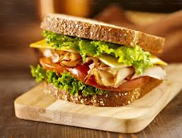

Home
Sandwich recipe

Description
A sandwich is a popular, portable dish consisting of fillings—typically meat, cheese, or vegetables—placed between two or more slices of bread, or inside a split roll.
It can also be an open-faced dish with a single slice of bread topped with ingredients.
Ingredients
- Bread: 2-3 slices
- Butter: 2-3 tsp
- Vegetables: Thinly sliced cucumber, onion, tomato, and bell peppers
Steps
- Slice all vegetables thinly.
- Spread butter on one side of each bread slice.
- Sprinkle with salt, pepper, or masala, then place a slice of cheese on top.
- Top with the second slice of bread (buttered side down)